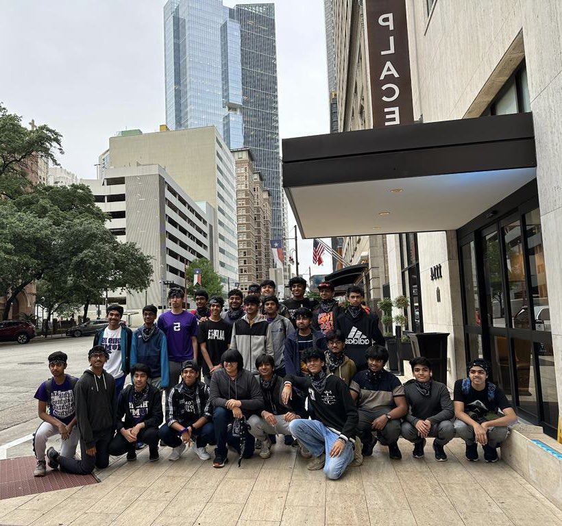

About Us
Knights Robotics is a non-profit FIRST Robotics Competition (FRC) that nurtures high school talent through STEM-based learning. We strive to encourage the practical application of STEM in our community through robotics. Students in our organization have opportunities to develop technical skills such as CAD, programming, and machining, in addition to soft skills such as teamwork, critical problem-solving, and leadership through various subteams and community events. Knights Robotics currently consists of students from Independence High School in Frisco, TX. The team was founded in 2018 and has since gone to the FRC World Championship during the Deep Space Season.
About FRC
More information can be found at the FIRST website.